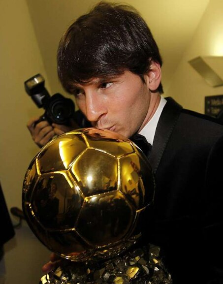

1. Orígenes e historia del premio
El Balón de Oro nació en 1956, creado por la revista francesa France Football. Al principio se entregaba al mejor jugador europeo. Después se convirtió en el premio al mejor futbolista del mundo.
Se entrega casi todos los años. En 2020 no hubo gala por la pandemia. En 2025 ganó Ousmane Dembélé. La próxima ceremonia está prevista para el 26 de octubre de 2026.

Lionel Messi · 8 Balones de Oro